|
Hi, I'm Raghav! I'm a 2nd year Computer Science Masters student (with a concentration in Machine Learning) at the Georgia Institute of Technology, advised by Prof. Jim Rehg and ChanHo Kim. Here, I work as a graduate researcher at the Computational Perception Lab and as a graduate teaching assistant for the Intro to AI course in the College of Computing. I earned my Bachelors in Computer Science from Georgia Tech, where my concentrations were Info-Internetworks and Artificial Intelligence. I spent a summer interning at Bloomberg, New York, where I built a new Bloomberg Terminal function that allowed the Access Control Team to interface with the internal workflow management system and manage the latest privileging requests. I've also completed an internship with Goldman Sachs' new consumer banking division, Marcus, where I worked on a persistent note-taking service to allow safe and efficent storage of agent and customer information. I'm fascinated by the applications of computer vision and love working on related projects during my free time or at hackathons! My other interests include football, table-tennis, videography, dance, board games, and Pokémon. |
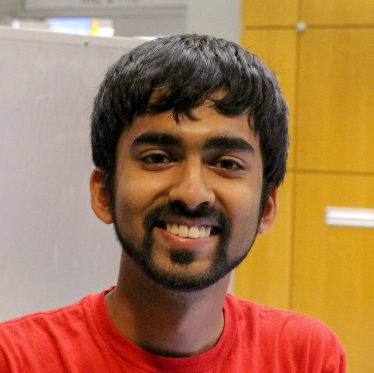 |
|
The problems I work with lie in the domains of Computer Vision, Machine Learning, Robotics, and Ethics. Some of my current interests include:
My ongoing research project at the Computational Perception Lab is to design supervised machine learning models to improve an RFID-guided multi-camera surveillance and tracking system to help animal behavior researchers infer a target animal’s social group structure and specific social behavior. To correct for camera lens distortions and noisy sensors, I propose an end-to-end learning-based approach that directly maps target locations to the correct pan and tilt angles of a PTZ camera, such that when the camera is rotated, the target animal appears at the center of the frame. |
|
|
Pet-Swap
Hemanth Chittanuru, Raghav Raj Mittal, Kenny Scharm, Sarah Li
Given an input image of your cat, find an image of a dog that it most similar in terms of fur/skin color and pattern (or vice-versa)! |
|
 |
Everybody Dance Now Raghav Raj Mittal, Vishvak Murahari, Taha Merghani Re-implementing the Everybody Dance Now paper for 'do as I do' motion transfer from a source video to a target subject |
| Bias in AI - Speculative Design Shubhangi Gupta, Raghav Raj Mittal Communicating data and algorithm bias in future AI systems through a series of posters and video | |
| 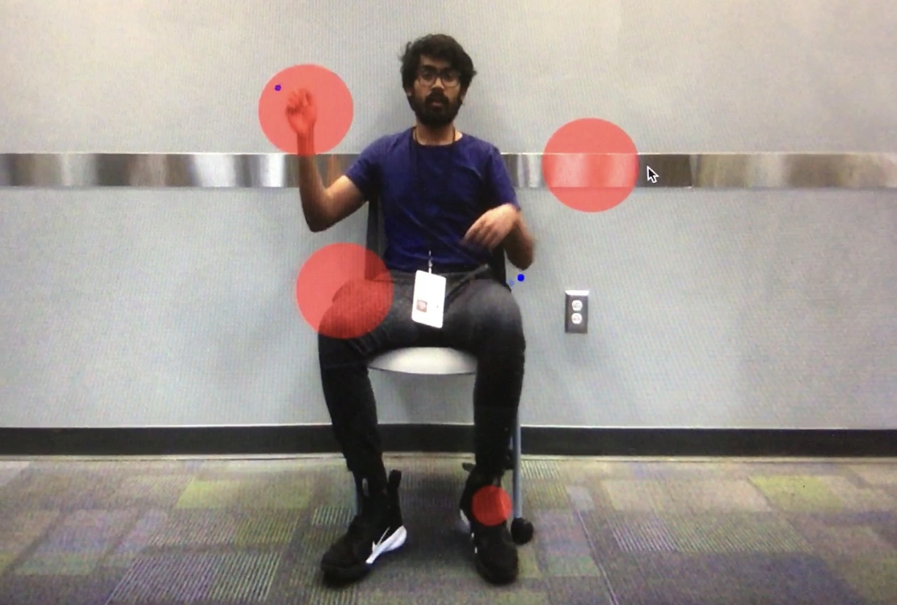 | HumDrum Mohit Chauhan, Raghav Raj Mittal, Adarsh Sasi, Likhit Nayak A virtual drum set that allows you to play drums in the air! |
| Express-Music Raghav Raj Mittal, Varun Ballari, Shivam Patel, Akhila Ballari Identify people in real time and play songs according to their facial expressions! | |
| Text Generation for The Big Bang Theory Raghav Raj Mittal, Austin Jiang, Satwik Mekala Train RNN-based models to generate scripts for the TV sitcom 'The Big Bang Theory'! | |
| 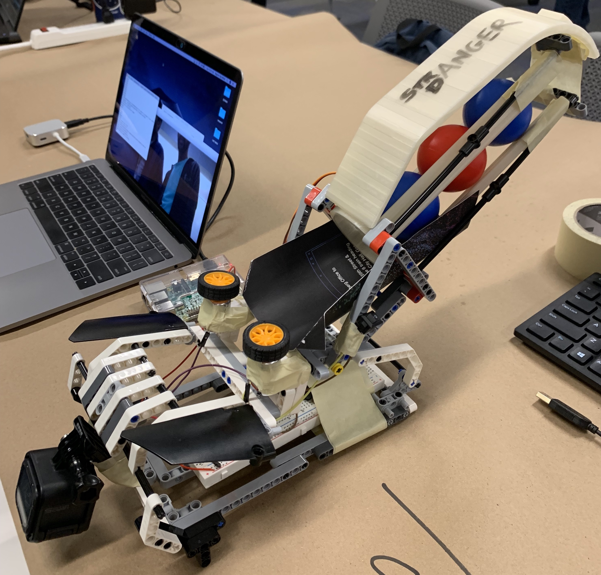 | Stranger Danger Raghav Raj Mittal, Abhishekh Tumuluru, Adarsh Sasi, Ayush Agrawal Contraption with a motorized launcher to launch toy balls as projectiles if an intruder is not recognized |
| 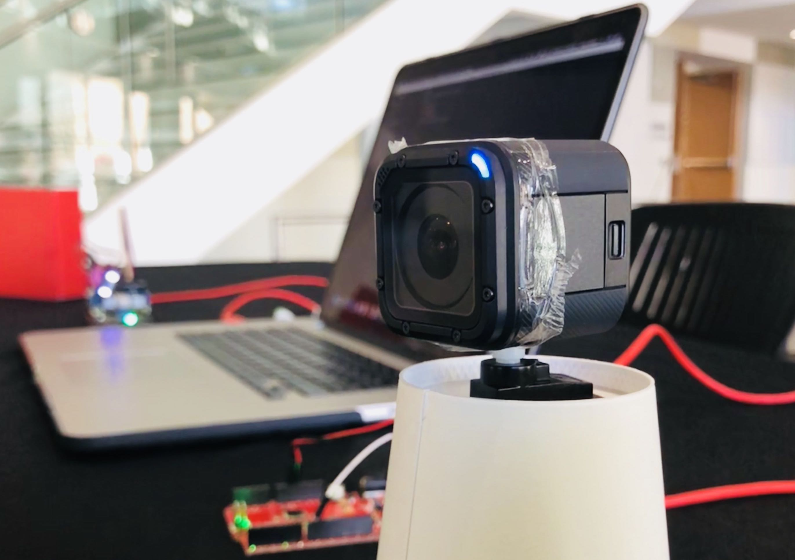 | Follow-Focus Varun Ballari, Raghav Raj Mittal, Akhila Ballari, Shivam Patel Rotate a GoPro camera using Grove Arduino modules to follow the user’s movement and always keep them in the frame! |
| 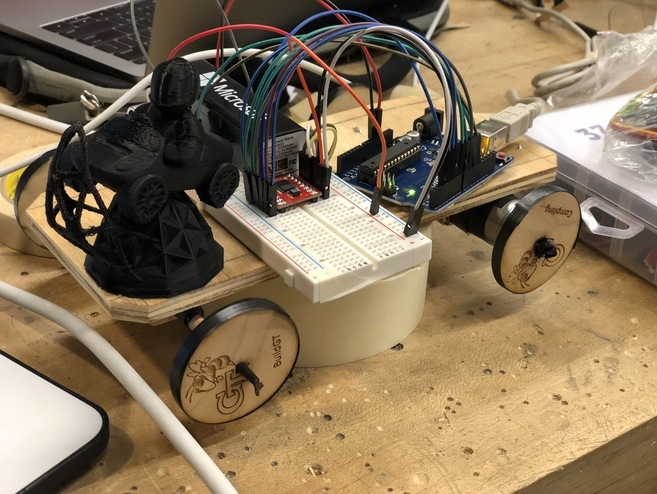 | Obstacle-Avoidance Tesla Varun Ballari, Raghav Raj Mittal, Akhila Ballari, Shivam Patel Arduino-powered car that detects object using a ultra-sonic sensor and moves itself to avoid those obstacles |
| 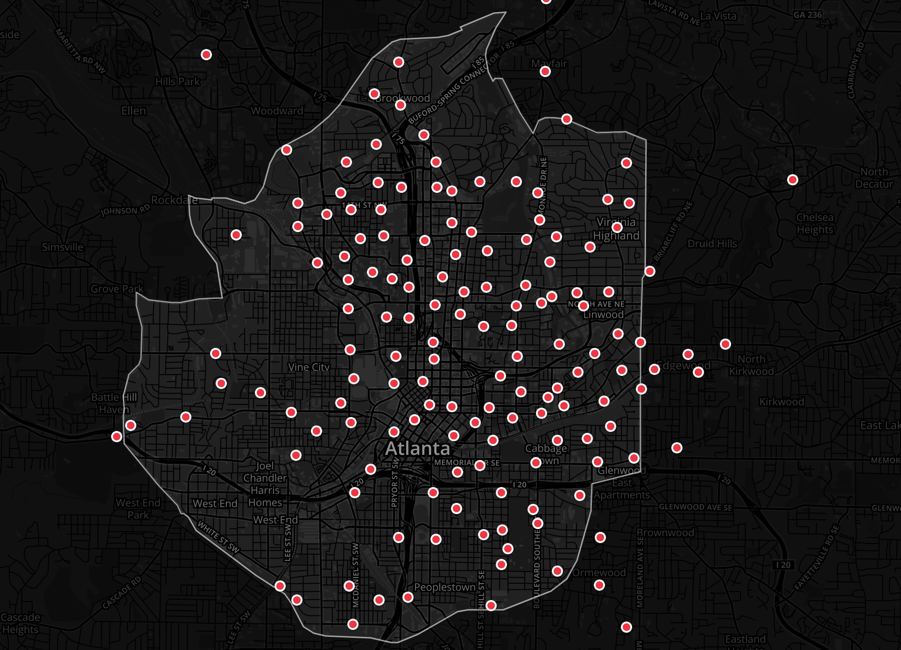 | Mapping North Avenue via E-Scooters Raghav Raj Mittal Critically exploring the role of technology in society by mapping Atlanta’s North Avenue in the context of electric scooters |
| 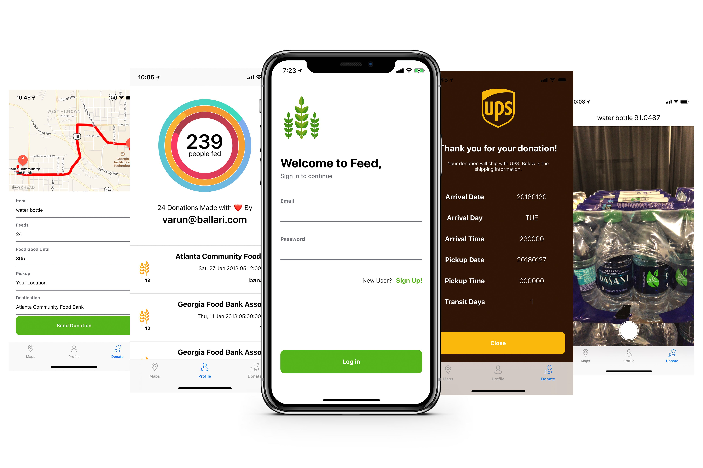 | Feed Varun Ballari, Raghav Raj Mittal, Akhila Ballari iOS App that allows users to donate excess food to food banks via UPS drivers traveling en route |
| CityLights Pravan Kalaga, Raghav Raj Mittal, Alyssa Tan, Maya Holikatti Desktop application for users to review cities and attractions | |
| 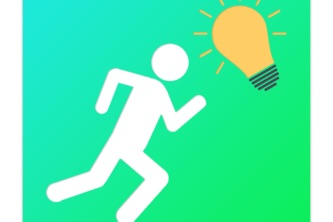 | Insight Mohit Chauhan, Raghav Raj Mittal Natural language understanding of users' twitter profiles for recruit evaluation |
| 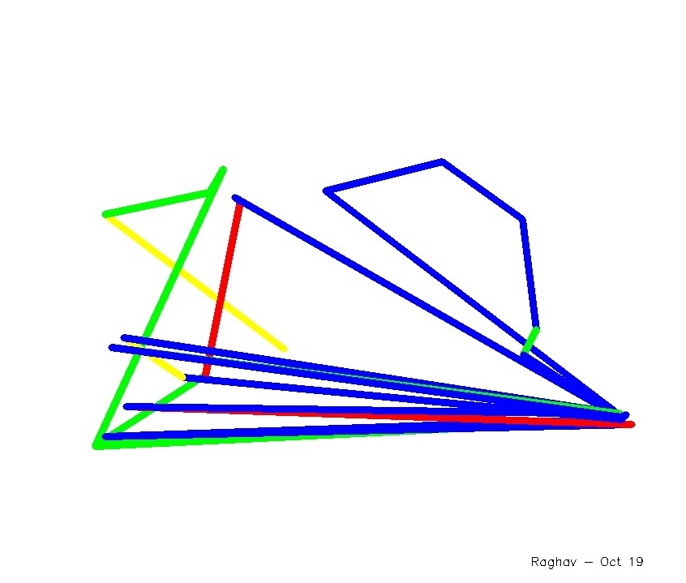 |
Magic-Palette
Raghav Raj Mittal
Wave a magic object in air to create digital art in real time! |
| 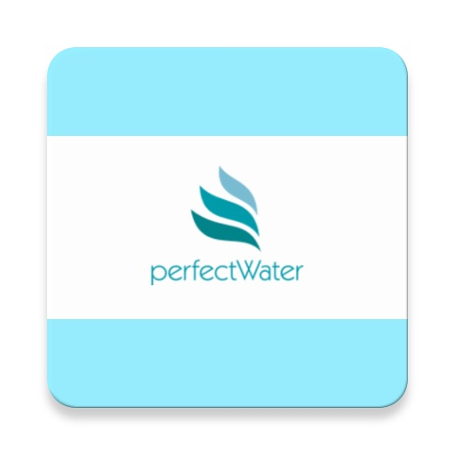 | PerfectWater Raghav Raj Mittal, Thushara Mudireddy, Anjana Balamourougan, Deepa Pillalamarri, Baria Manahill Crowd-sourced water availability app that allows users to report water location and purity reports |
| 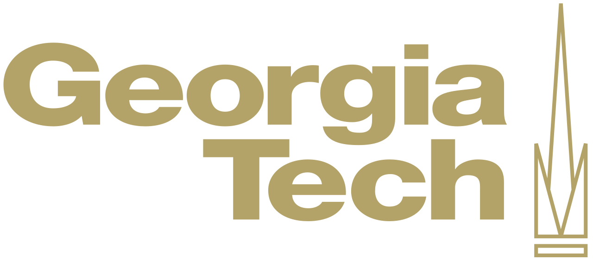 | Georgia Institute of Technology, Atlanta, GA |
| Georgia Institute of Technology, Atlanta, GA | |
| 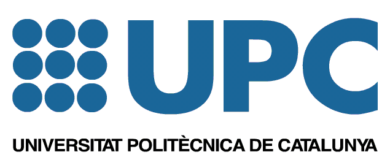 | Universitat Politècnica de Catalunya, Barcelona, Spain |
| 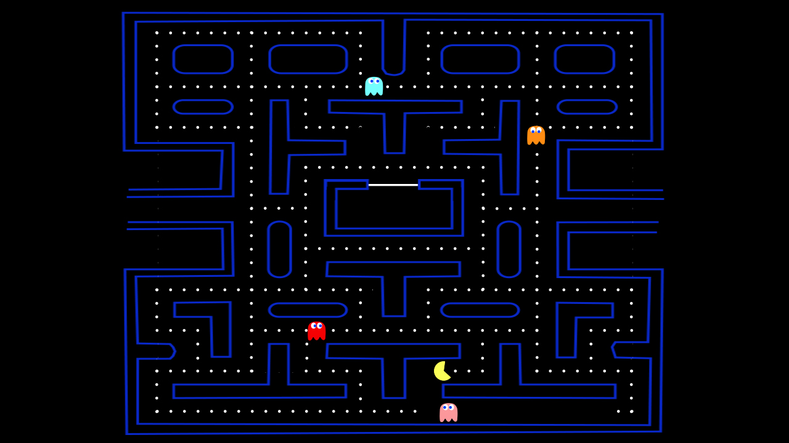 | Introduction to Artificial Intelligence (CS 3600) Guiding 200+ students on AI coursework, projects, and homework. Teaching concepts including, but not limited to, probabilistic inference, Neural Networks, Search, Markov Decision Processes, Decision Trees, and Reinforcement Learning. |
 |
Introduction to Robotics and Perception (CS 3630) Collaborated with a team of 11 TAs to release quizzes and projects, and assisted 200+ students with the course and topics such as image processing, localization, particle filters, kalman filters, control systems, and path planning. |
| 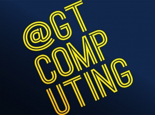 | College of Computing Conducted weekly 1-to-1 tutoring sessions for students on Data Structures, Algorithms, Systems, Networks, Python, and C. |
| Center for Academic Enrichment Acted as an upper-class mentor for first-year students and offered advice, support and making their transition from high school to college easier. |
|
Template from here. |